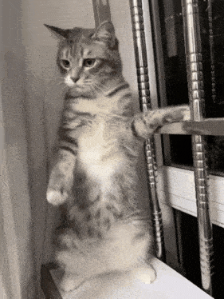
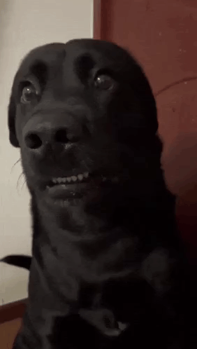

la gata rumbera La ratica es una gatica tranquila y curiosa. Le gusta dormir mucho durante el día y jugar en las noches 
perra rumbera Sammy es mi perrita, muy juguetona, cariñosa y le encanta correr por toda la casa. Siempre está conmigo y es muy fiel 